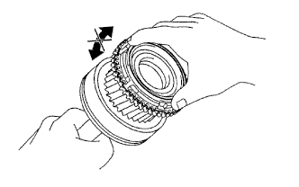
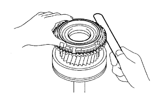

ПЕРВИЧНЫЙ ВАЛ > ПРОВЕРКА |
| 1. INSPECT NO. 2 SYNCHRONIZER RING |
|  |
Coat the input shaft cone with gear oil.
Check the braking effect of the No. 2 synchronizer ring.
Install the ring to the shaft cone.
Apply pressure to the ring and attempt to turn it in both directions. Check that the ring locks.
|  |
Using a feeler gauge, measure the clearance between the No. 2 synchronizer ring back and input shaft spline end.